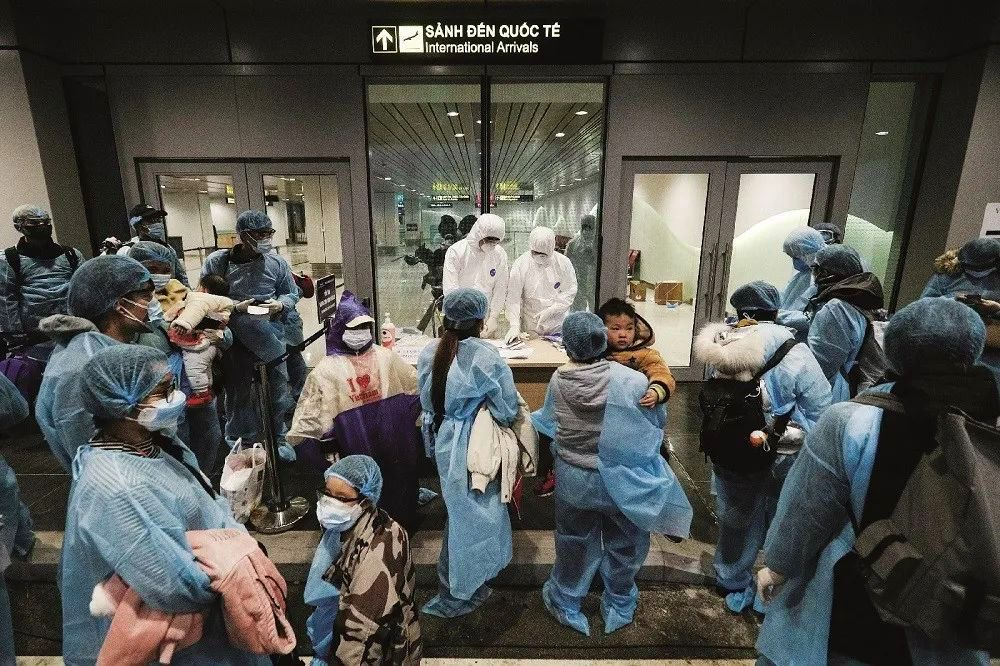
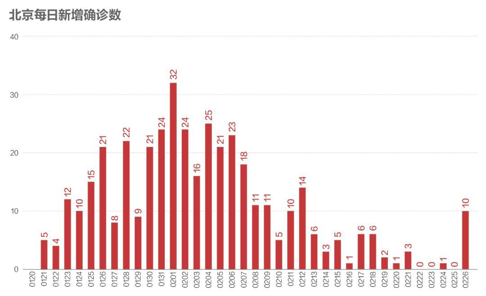
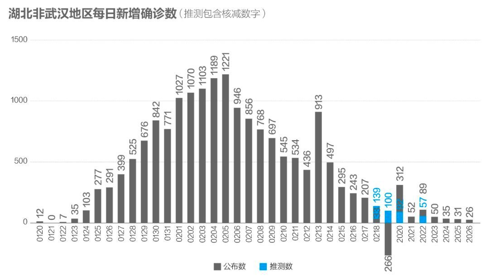
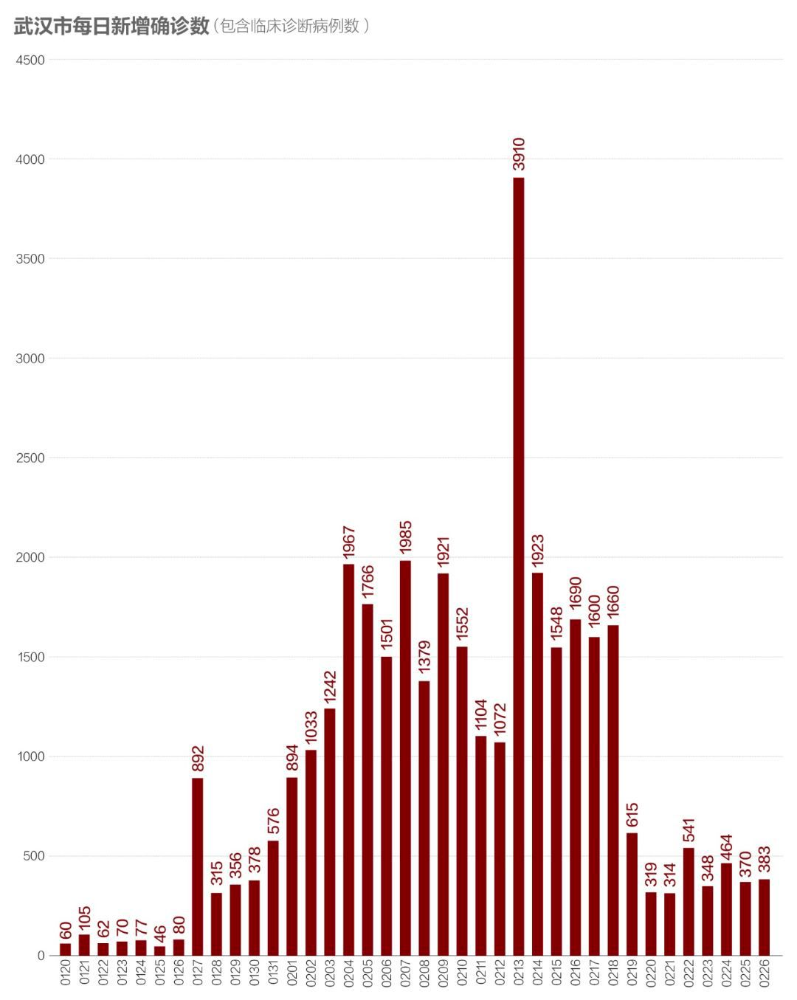
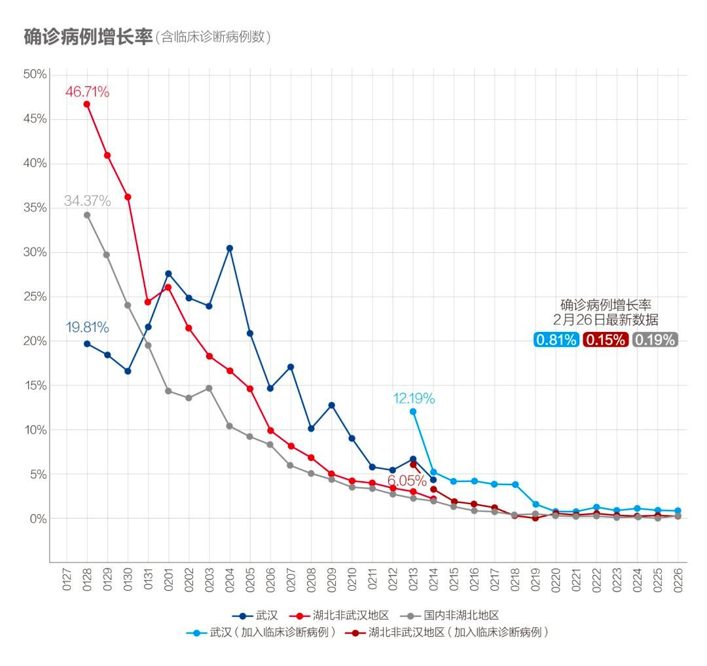
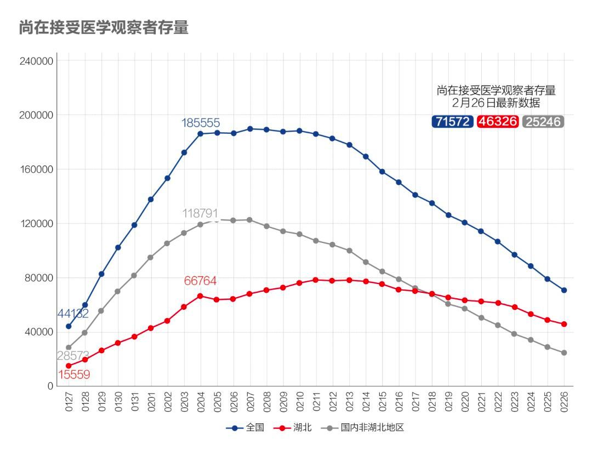
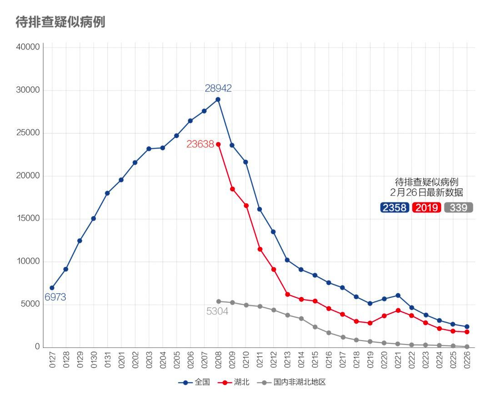
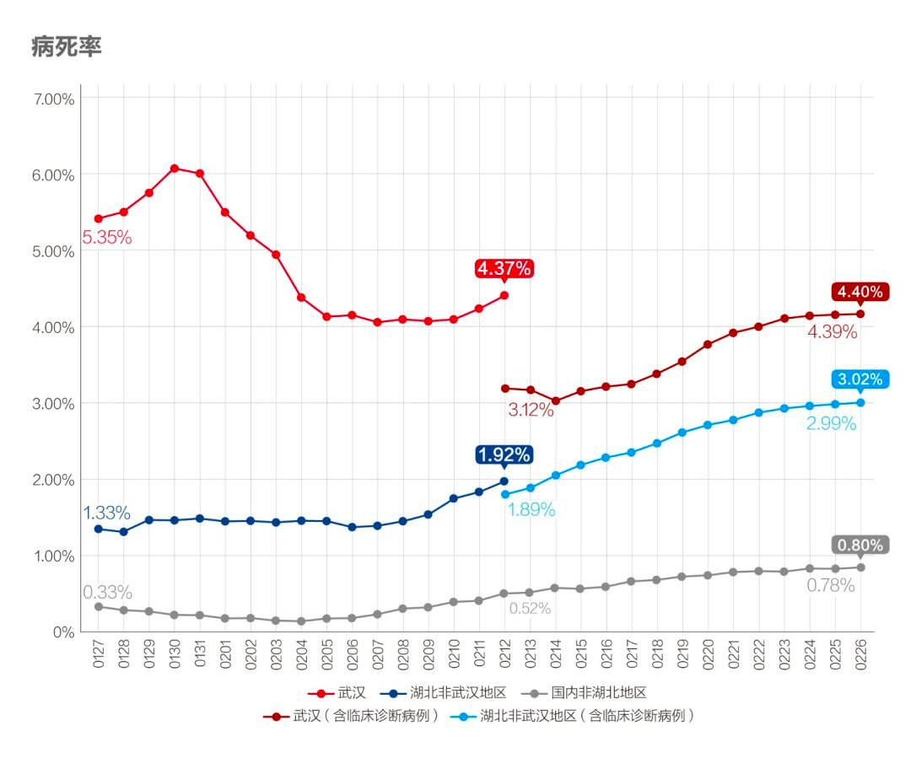
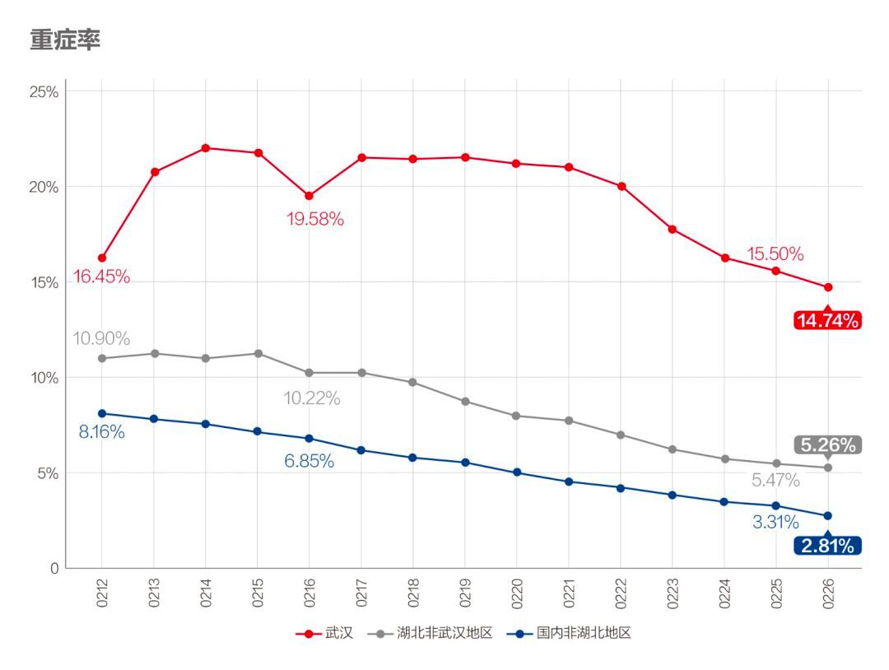

数说疫情0227：非湖北地区出现异常反弹，海外新增病例首超国内
原文链接 备份链接 国内非湖北地区25日新增病例24例，其中北京10例，从这些地方接受医学观察者数量、新增疑似病例以及待排查疑似病例等上游数据均持续稳步下降的态势看，此数据大幅反弹应属异常 文 |《财经》数据研究员徐进 图 |《财经》视觉 …

国内非湖北地区25日新增病例24例，其中北京10例，从这些地方接受医学观察者数量、新增疑似病例以及待排查疑似病例等上游数据均持续稳步下降的态势看，此数据大幅反弹应属异常。
本文 1849字，阅读全文约2分钟

图/pixabay
文 |《财经》数据研究员徐进 图 |《财经》视觉中心
编辑 | 谢丽容
一、 累计确诊病例：全国总病例数有望控制在8万例左右
截至2月26日24:00，31个省（自治区、直辖市）和新疆生产建设兵团累计报告确诊新冠肺炎病例78497例，新增病例433例。

图1
二、 新增病例：北京、张家口等地出现异常反弹

图2
国内非湖北地区25日新增病例24例，其中北京10例，出现大幅反弹。从这些地方接受医学观察者数量、新增疑似病例以及待排查疑似病例等上游数据均持续稳步下降的态势看，此数据大幅反弹应属异常。北京卫健委发布的信息指此10例均为2月25日北京市公布病例的密切接触者发病后诊断病例，经现场流行病学调查，判断该起疫情为输入性单位聚集性疫情。反弹较大的还有河北张口市（5例）、四川甘孜州（3例）等，从此前湖北武汉几次异常数据波动的情况看，进行某种存量病例消化的可能性较大。我们期待有关方面进一步的消息和解释。

图3
湖北非武汉地区虽总体下降，但孝感一地出现15例，值得关注。

图4
武汉的数字似乎显示其又在消化一个小的堰塞湖。读者刘洋认为：武汉近几日数据在一个平台期震荡，而没有持续下降的核心原因有三个，且依次递减：
1) 武汉长期资源不足，倒逼“密切接触者”的口径偏窄，1：4左右，而武汉以外地区很早就高达1：30以上了，现在资源跟上来了，就有了新一轮的拉网筛查；
2) 各地社区基层组织能力不同，此前有武汉当地人频频抱怨自己所在小区没有被排查，这部分只有重新拉网排查，这会令一些区域在一个时间内集中出现新增确诊病例数；
3) 应该只有极小概率是因为前期小区没有充分封闭导致的二次传播，比如个别小卖部的问题，从外地经验看这部分因素很难影响大数据池子，但管理起来却像大海捞针，难免过度从严管理。
综上所述，读者刘洋预测，除非一次性暴雷事件，近期武汉确诊数就会出现大幅度下降。同理，今日孝感出现的15例新增确诊病例可能也是相似原因，因为前期其返乡人数最多，导致疑似、密切接触者的口径太宽，从而延长了二次排查窗口期。小编比较认同读者刘洋的解读。
三、 确诊病例增长率：非湖北地区异常反弹

图5
湖北非武汉地区降至0.20%以内，武汉和国内非湖北地区出现反弹。
四、 密切接触者追踪

图6
湖北该指标一直远低于非湖北地区。考虑到湖北，特别是武汉实行社区封闭管理，人员流动和社交活动已受限制，有这样的追踪比，应大体合理。而由于有较大资源优势，非湖北地区近三日追踪比已达到150左右。

图7
该存量继续下降，意味着不断释放更多医疗资源、社会人力资源和隔离空间投入到新的密切接触者追踪、隔离上。
五、 疑似病例：非湖北地区继续下降，湖北地区有所回升

图8
继续下降，符合预期。

图9
非湖北地区延续持续下降的趋势，湖北在拉网排查取得成功后，已连续多日下降，印证“拉网筛查”战果。也符合我们的预期。
六、 在院治疗人数：继续释放医疗资源，武汉资源状况已完全逆转

图10
在院治疗人数存量下降，继续成规模释放病床床位。推测出的“湖北确诊未入院”人数也继续下降。
七、 病死率缓升、治愈率以更快速度上升

图11
病死率自2月上旬以来持续缓升，基本符合疫情中病死率变化正常特征。但在湖北特别是武汉，也有救治措施不到位因素。2月24日，中央应对新冠肺炎疫情工作领导小组会议特别指出，武汉要落实分类收治措施，尽最大努力降低病死率。近日，中央有关加强救治能力的一系列措施正在加快实施，2月24日中央应对新冠肺炎疫情工作领导小组会议上进一步强调了武汉市要进一步落实排查和分类收治措施，全面提高救治能力，尽最大努力提高治愈率、降低病亡率，有针对性加大重症和危重症患者救治力度，推进轻症患者治疗“关口前移”，防止轻症转为重症。从重症率较快下降可以推测，加强救治的一系列措施正在使各地特别是武汉的救治形势发生较大变化。

图11.1

图12
治愈率以更快速度上升。
八、新增确诊和新增治愈剪刀差继续扩大

图13.1

图13.2
新增确诊病例数和新增治愈病例数剪刀差继续扩大，资源持续释放，已经使武汉的救治资源情况发生了根本逆转。由原来的“人等床”变成了“床等人”。
九、海外新增病例557例，首次超过国内

图14
从海外每日新增病例图可见，海外的疫情仍在不断增长扩散中，迄今未见转缓迹象。海外的新增病例数首次超过中国。近日在韩国和意大利持续扩散，分别新增284和147病例，引起关注。
小结：国内非湖北地区新增病例异常地大幅反弹，海外新增病例首超国内。看来小编想早点儿下课的心愿还得往后推几天了。

系列报道
◤活粒为《财经》杂志 科技与健康团队 的新媒体项目，坚持独立、独家、独到，合作／爆料请联系：yingxin@caijing.com.cn◢

《财经》旗下健康领域深度报道专栏
扫一扫：

原文链接 备份链接 国内非湖北地区25日新增病例24例，其中北京10例，从这些地方接受医学观察者数量、新增疑似病例以及待排查疑似病例等上游数据均持续稳步下降的态势看，此数据大幅反弹应属异常 文 |《财经》数据研究员徐进 图 |《财经》视觉 …
原文链接 备份链接 全国多数省区已实现“零新增”，统计上未见疫情卷土重来证据，也未发现意味着疫情死灰复燃的个案 文/《财经》数据研究员徐进 图/《财经》视觉中心 编辑/谢丽容 今天是农历二月二“龙抬头”。按北方农村传统，今起春耕大忙开 …
原文链接 备份链接 全国21省份22日零新增，抗疫战果继续巩固。此前我们预测湖北疑似病例存量，在拉网排查取得成功后会于22日开始下降，最新数据确实印证了该预测 文 |《财经》数据研究员 徐进 图 |《财经》视觉中心 编辑 | 谢丽容 …
原文链接 备份链接 为什么我们说武汉战局出现了反守为攻的转机？主要有3点 文 |《财经》数据研究员 徐进 图 |《财经》视觉中心 编辑 | 谢丽容 一、 累计确诊病例：趋势现“顶” 截至2月21日24:00，全国累计报告确诊新冠肺炎病 …
原文链接 备份链接 _ 武汉新增确诊病例和新增治愈病例今日跨过“黄金交叉”点，从此全国包括武汉在内将逐日加大释放以医院病床床位为核心的医疗资源。但也应注意到2月20日数据出现两个异常：一是非湖北地区新增病例出现巨大反弹；二是国家卫健委与湖 …